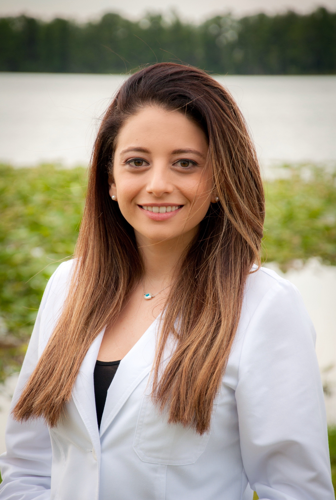
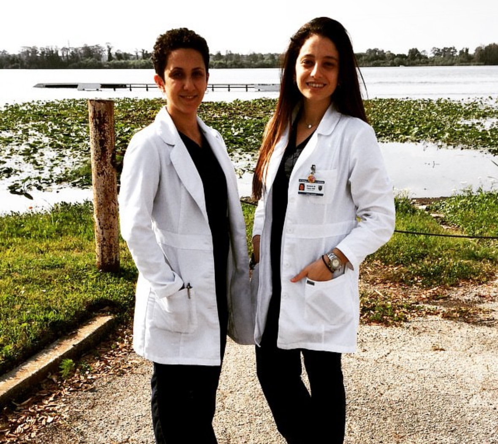
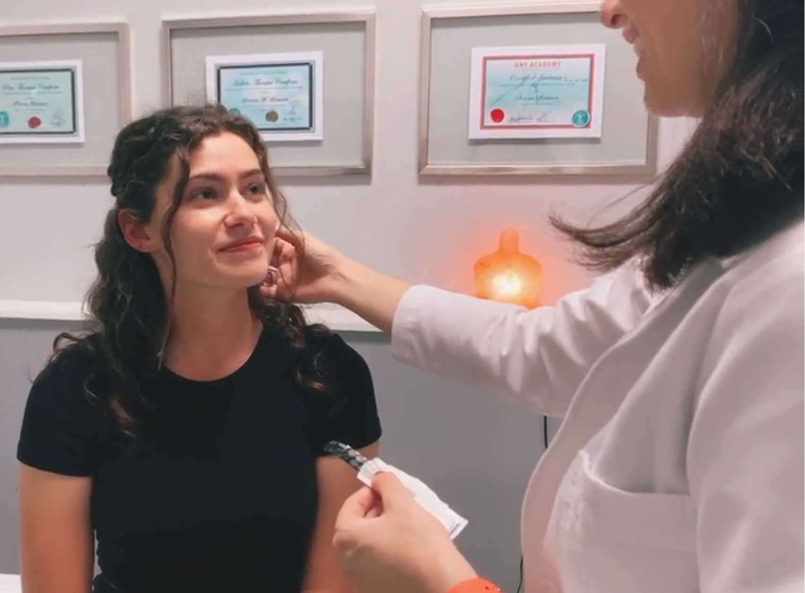
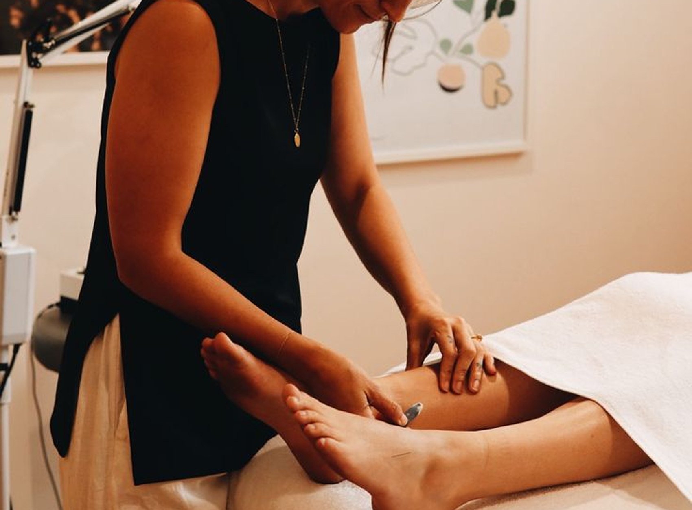

INTEGRATIVE CARE FOR MODERN LIFE

Dr. Serena Semaan is a licensed acupuncture physician dedicated to helping patients restore balance, relieve pain, and reconnect with their bodies through thoughtful, individualized care. Her approach blends traditional Chinese medicine with modern clinical understanding, creating treatments that feel both grounded in history and relevant to everyday life.
Dr. Semaan received her Doctorate in Acupuncture and Oriental Medicine from [University Name – City, State], where she completed advanced training in acupuncture, herbal medicine, and integrative health sciences. She also holds a degree in [Previous Degree or Field] from [Institution Name], which deepened her interest in the connection between movement, nervous system health, and overall wellbeing. During her clinical training, she focused on pain management, women’s health, and stress-related conditions, working with a diverse range of patients in community and private clinic settings.
Her path to acupuncture began after experiencing its benefits firsthand. Like many of her patients, Dr. Semaan initially sought acupuncture while searching for natural support for [placeholder: personal health challenge or injury]. The experience sparked a curiosity about how the body heals and how gentle interventions can create profound change. This curiosity eventually grew into a passion for helping others feel more at home in their bodies.
Dr. Semaan believes that healing is not about quick fixes but about understanding each person as a whole. She takes time to listen, ask questions, and design treatments that fit her patients’ lifestyles, goals, and comfort levels. Whether someone is coming in for chronic pain, stress, sleep concerns, or general wellness, her intention is always the same — to create a space where patients feel heard, safe, and supported.
Outside of the clinic, Dr. Semaan enjoys practices that reflect her philosophy of balanced living. She is passionate about yoga and Pilates, which she credits with keeping her grounded and connected to mindful movement. She also enjoys [placeholder: hobbies such as hiking, cooking, reading, traveling, time with family, etc.], and draws inspiration from nature, art, and the quiet rhythms of daily life. Through Serenity, Dr. Semaan hopes to offer more than treatments — she hopes to offer a place of calm within the noise of modern life, where healing feels natural, respectful, and empowering.


